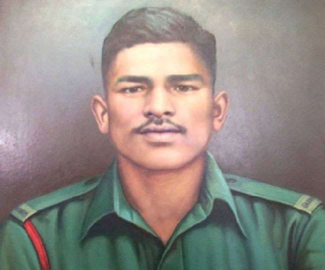

Jaswant Singh Rawat

The Rifleman Jaswant Singh Rawat was serving in the 4th battalion, 4th Garhwal Rifles on 17 November 1962 during the Battle of Nuranang, in the North-East Frontier Agency (now Arunachal Pradesh). On that day, the 4th Garhwal Rifles had beaten back two People's Liberation Army charges on their position. During a third intrusion, a Chinese medium machine gun (MMG) had come close to the Indian defenses and was firing accurately at their positions. Rifleman Jaswant Singh Rawat, along with Lance Naik Trilok Singh Negi and Rifleman Gopal Singh Gusain volunteered to subdue the MMG.[2][3][4][5]
Rawat and Gusain, aided by covering fire from Negi closed within a grenade-throwing distance of the machine gun position and neutralized the Chinese detachment of five sentries, seizing the MMG in the process. However, while returning, Gusain and Negi lost their lives and Rawat was seriously injured, although he managed to return with the captured weapon. The battle resulted in 300 Chinese casualties, whereas the 4th Garhwal Rifles lost two men and had eight wounded.[6]
The bravery shown by Jaswant Rawat was honored by building a memorial at the post where he fended off the People's Liberation Army but lost. The post which he held was named "Jaswant Garh".[7][8] Another honor bestowed upon him is that he continues to serve even after death; he has been awarded promotions as if he is still serving.[9]
4th Garhwal Rifles was later awarded the Battle Honour Nuranang, the only battle honor awarded to an army unit during the war.
The Rifleman Jaswant Singh Rawat was serving in the 4th battalion, 4th Garhwal Rifles on 17 November 1962 during the Battle of Nuranang, in the North-East Frontier Agency (now Arunachal Pradesh). On that day, the 4th Garhwal Rifles had beaten back two People's Liberation Army charges on their position. During a third intrusion, a Chinese medium machine gun (MMG) had come close to the Indian defenses and was firing accurately at their positions. Rifleman Jaswant Singh Rawat, along with Lance Naik Trilok Singh Negi and Rifleman Gopal Singh Gusain volunteered to subdue the MMG.[2][3][4][5]
Rawat and Gusain, aided by covering fire from Negi closed within a grenade-throwing distance of the machine gun position and neutralized the Chinese detachment of five sentries, seizing the MMG in the process. However, while returning, Gusain and Negi lost their lives and Rawat was seriously injured, although he managed to return with the captured weapon. The battle resulted in 300 Chinese casualties, whereas the 4th Garhwal Rifles lost two men and had eight wounded.[6]
The bravery shown by Jaswant Rawat was honored by building a memorial at the post where he fended off the People's Liberation Army but lost. The post which he held was named "Jaswant Garh".[7][8] Another honor bestowed upon him is that he continues to serve even after death; he has been awarded promotions as if he is still serving.
4th Garhwal Rifles was later awarded the Battle Honour Nuranang, the only battle honor awarded to an army unit during the war.
Home